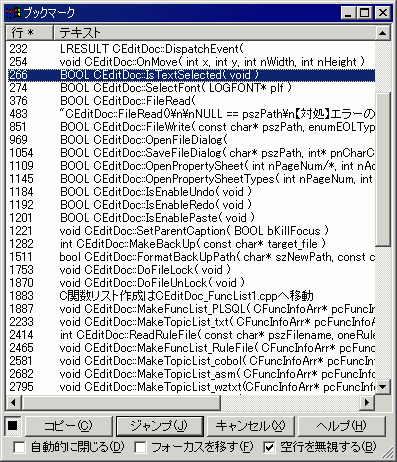

[
目次
]
ブックマークの一覧
ブックマーク
の一覧をアウトライン解析と同じダイアログで表示します。
ダイアログにフォーカスがあるときに、「ブックマークの一覧」のショートカットキー（デフォルトではAlt+F2)を押すと、内容を更新できます。
「
アウトライン解析
」のショートカットキー（デフォルトではF11)を押すと、アウトライン解析に切り替えられます。

■
マクロ構文
・構文: BookmarkView( );
・記録: ×